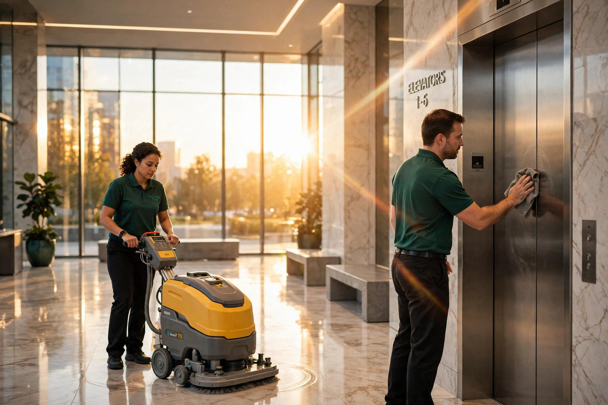

Commercial Cleaning in Rio Rico,
done with care.
Rio Rico is an unincorporated community north of Nogales in the Santa Cruz River valley — rolling-hill subdivisions around a golf resort, with Tubac's art colony up the road and some of Arizona's best birding along the river. Many residents work the border trade in Nogales.
Commercial cleaning is scheduled, scoped and accountable: a facility cleaned on a set rhythm by an in-house team, working to a written scope for that building — not a rotating cast of subcontractors with a generic checklist.
Discuss this service ↗
Every detail
has a purpose.
Schedules that fit the workplace
Daily, weekly or custom rhythms for offices, schools, veterinary clinics and specialty facilities — arranged by conversation and held by the same in-house team.
Every surface, on a scope
Workstations, restrooms, break rooms, glass, floors and touchpoints — cleaned to the facility-specific scope agreed before the first visit.
Quality controls, clear communication
Predictable communication and quality checked against the scope — one accountable company to call, never a subcontractor chain.
Rio Rico's commercial life is its resort, golf club and I-19 corridor services. Commercial cleaning on a set schedule keeps those spaces at the standard guests expect.
Across Rio Rico,
neighborhood by neighborhood.
Flawless Bio Clean serves all of Arizona, and Rio Rico is part of that statewide coverage — including Esplendor / golf course area, Rio Rico Drive corridor, Peck Canyon corridor and the rest of the Southern Arizona.
Esplendor / golf course areaRio Rico Drive corridorPeck Canyon corridorPendleton Drive areaSanta Cruz River corridorI-19 corridor
From Esplendor / golf course area to Peck Canyon corridor, the pattern is the same: every facility is scoped on its own terms — its size, its surfaces, its schedule and its standards — before any price is discussed. One call to (480) 589-6200 starts the conversation.
Good questions.
Clear answers.
The short answer: Commercial Cleaning in Rio Rico is provided by Flawless Bio Clean LLC — a family-owned Arizona cleaning company led by Owner & Founder Yvette Valenti, with seven years of professional cleaning experience and work performed by in-house technicians, never subcontracted crews. To book, call (480) 589-6200 Monday–Friday, 8 AM–5 PM, or email info@flawlessbclean.com.
One call routes you to the right service — no obligation, no pressure.
Call (480) 589-6200Is Rio Rico inside your service area?
Yes — Flawless Bio Clean serves all of Arizona, and Rio Rico is part of that statewide coverage. Call (480) 589-6200 to book, Monday–Friday, 8 AM–5 PM.
What kinds of facilities do you clean commercially?
Offices, schools, veterinary clinics, retail and specialty facilities across Arizona — each scoped facility by facility before quoting. Call (480) 589-6200 to talk through your building, Monday–Friday, 8 AM–5 PM.
How do I book commercial cleaning in Rio Rico?
Call (480) 589-6200 or email info@flawlessbclean.com, Monday–Friday, 8 AM–5 PM. Flawless Bio Clean scopes every facility before quoting — there is no instant online price, because the price follows the building, not a form.
Flawless in Rio Rico,
start to finish.
The rest of the Flawless lineup for Rio Rico:
Maid Service in Rio Rico ↗Deep Cleaning in Rio Rico ↗Move-Out Cleaning in Rio Rico ↗Airbnb Turnover Cleaning in Rio Rico ↗
Rio Rico sits in the Southern Arizona hub — every Flawless city page in the region — under the statewide Arizona hub.
Looking for the full picture? See all home services, every Flawless solution — including commercial cleaning and the certified specialties — or meet the owner and the standard behind the work.